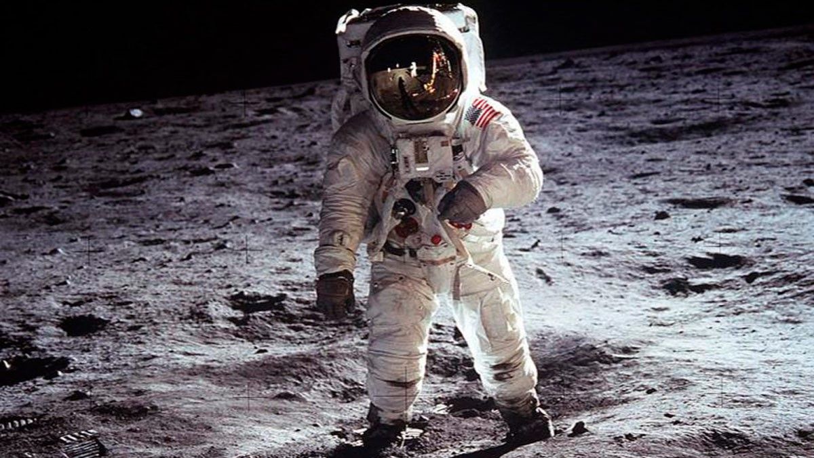

Have you ever imagined to travel to the moon? Of course that many of us when we were children dreamed of going to space and watch the stunning moon very close to us. Now for some people is no longer just a dream, on September 17, 2018, SpaceX a company that designs, manufactures and launches advanced rockets and spacecraft, announced fashion innovator and globally recognized art curator Yusaku Maezawa will be the company´s first private passenger to fly around the Moon in 2023. If you were Yusaku, how would you feel?...
Furthermore, enthusiasts such as Elon Musk, founder of the SpaceX company, dreams of uniting the Earth with any place in the solar system. Musk, a technology entrepreneur, investor, and engineer, believes civilization cannot succeed without expansion. He also thinks that if we did not improve the development of space technology, we could forget the importance this represents in the future.
At the same time, NASA has been working on a program called “Constellation”, their mission is to colonize in 2020 the Moon to do science, exploit its resources and learn to survive on another planet.
A Chinese tale tells of some men sent to harm a young girl who, upon seeing her beauty, become her protectors rather than her violators. That's how I felt seeing the Earth for the first time. I could not help but love and cherish her.
W. M. Braselton, vice president of Harris Corporation, announced that if we returned to the Moon, we would do it out of economic and environmental necessity, not for political purposes like Apollo 11.
 Apollo 11.